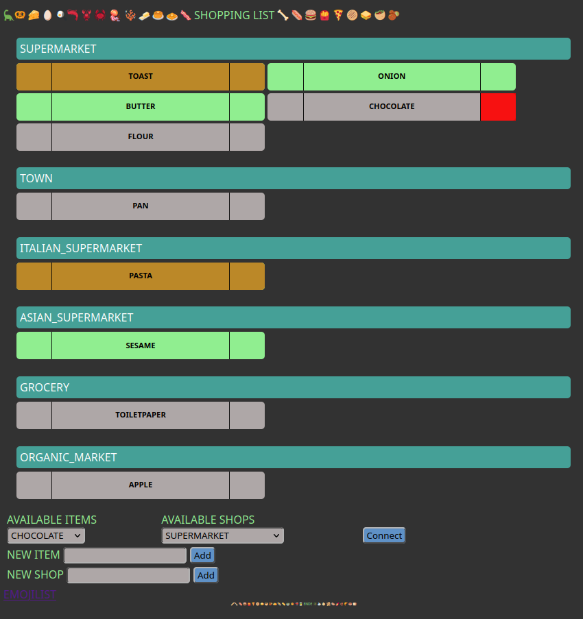

Shopping
UseCase:
As a user, I want to manage my shopping list. Mark important stuff and cross things of the list.
User is allowed to do the following actions:
Shop:
Item:
- add item to a shop
- add item to the app
- set item as required for a shop
- set item as important for a shop
- delete an item from a shop
Color:
- Orange: An important item
- Green: An required item
- Grey: Item not required and not important
Sorting:
- Shops with the most items are coming first.
- Items are sorted in this order: important, required, not needed at the moment
-
- Each group of items is sorted by usage, how many times it was used.
Relations:
- One shop can contain multiple items (1:n).
- One item can be in multiple shops (1:n).
- One item can has two states
-
-
-
- One item can be deleted from a shop.
As you can see, the state, that an not required item is not implemented. This is by design.
Behind the curtain:
We count the state change for each item and track the creation and updated date_time of each shop and item.
We create a history to track the usage over time.
Description of the image:
In the following image, you can see the dashboards with the items and the shops. At the bottom , we have the dropdown and inputs fields to add new shops and items. And most importantly we connect items to shops.
In the picture, you can see the red part of the item buttom. This is clicked once and a second time to confirm the deletion of the item. This is reset as soon as the state of that specified item changes.

Stack
- Using tera as template engine to generate the HTML.
- Vanilla JS and CSS, which is provided via rocket FileServer.
- Using rocket to handle requests, serve responses.
- Using tokio to read and write into files.
Languages
- BE: Rust Rocket server (nightly v1.67)
- FE:
- VanillaJS packaged via webpack
- CSS
- HTML generated by the BE via tera
[dependencies]
rocket = { version = "=0.5.0-rc.3", features = [ "json"] }
futures = { version = "0.3.28" }
regex = { version = "1.9.3" }
tokio = { version = "1.31.0" , features = [ "fs" ] }
chrono = { version = "0.4.25", features = [ "serde" ] }
[dependencies.rocket_dyn_templates]
version = "=0.1.0-rc.3"
features = [ "tera" ]
Server operation stack
Containerized server stack.
Past projects
Wekan CLI
Features
- Login via prompt, can be insecure as well or localhost
- Set context to have multiple WEKAN hosts
- Logout user and remove contexts
- Show board, lists, cards and checklists
- Remove board, list, cards and checklists
- Update cards properties:
-
- Move between lists of the same board
-
- Update title, description, due_at, end_at and sort properties
- Recommend your next workflow, after one command has been run
- Store: Requests artifacts will be writen into the store locally. At the moment, this data can also be corrupted by the user. If the CLI doesn't find anything, it will do a new request. Using of local store can also be disabled with -d.
- get subcommand tries to parse your input type/name, like kubectl
- inspect subcommand takes the original id. You can get the Id in the URL if you have a session open or if you use -o ext.
- table build are table of one board, where all lists and cards are arrange in the same order as on the webpage
Reference: wekan-cli
Bots for the Matrix federated network
Coffee bot:
Takes the parameter from a message and writes it into a table.
Guardian bot:
Takes the RSS files from the subject list subject list and provides link to the user.
For example, a user can ask for 'microsoft, linux' and he would receive a list of links, which are tagged with one of these subjects.